Create “Hello World” application on PIC MCUs
Introduction
MPLAB Harmony v3 is a software development framework consisting of compatible and interoperable modules that include peripheral libraries (PLIBs), drivers, system services, middleware and third-party libraries. The MPLAB Harmony Configurator (MHC) is a GUI-based tool that provides an easy way to enable and configure various MPLAB Harmony modules. The MHC is a plug-in to the MPLAB X Integrated Development Environment (IDE).
This page describes how to create an application on a 32-bit PIC32 microcontroller (MCU) using MHC with MPLAB Harmony v3 modules. This application sends a “Hello World!” string to a console running on a computer. For this demonstration, the following MPLAB Harmony v3 modules are used and configured using the MHC:
- Clock PLIB using the Clock Manager to configure the microcontroller clock.
- GPIO PLIB using the Pin Manager to configure the microcontroller I/Os.
- UART PLIB to configure USART peripheral as serial port.
Required Software
The instructions in this tutorial assume that you have already installed following software.
Required Hardware
The instructions in this tutorial use Curiosity PIC32MZ EF 2.0 Development Board. Similar kits will work similarly, but the setup and steps may not be exactly as described.
Setup: The following figure shows the hardware setup details:
- Connect Curiosity PIC32MZ EF 2.0 Development Board micro USB port to PC using a micro USB cable
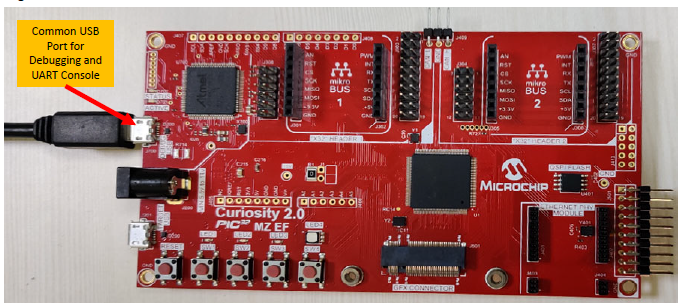
Procedure
Step 1: Creating an MPLAB Harmony v3-based Project:
- Launch MPLAB X IDE.
- In MPLAB X IDE, select File > New Project (or click the New Project icon).
-
In the New Project window, select Microchip Embedded in the Categories pane and select 32-bit MPLAB Harmony 3 Project in the Projects pane.
Note: If the option 32-Bit MPLAB Harmony v3 Project is not available, install the MPLAB Harmony v3 Configurator plug-in from Tools > Plugins > Available Plugins before continuing with this demonstration. For details, Refer MPLAB Harmony v3 Configurator. 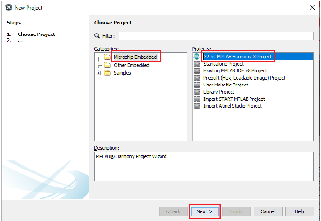 - Click Next.
-
Under Framework Selection, in the Manage Framework section, enter the Framework Path (Path to the folder in which the MPLAB Harmony v3 packages are downloaded). For this demonstration, the MPLAB Harmony v3 packages are downloaded in the following location: D:\microchip\github\h3.
 Note: For this demonstration application, the following MPLAB Harmony v3 packages are required: mhc, dev_packs, and csp. The MPLAB Harmony 3 Content Manager tool simplifies the downloading of the MPLAB Harmony v3 packages. If these packages are not downloaded, then the user can use the MPLAB Harmony 3 Content Manager tool to download them onto their computer.
Note: For this demonstration application, the following MPLAB Harmony v3 packages are required: mhc, dev_packs, and csp. The MPLAB Harmony 3 Content Manager tool simplifies the downloading of the MPLAB Harmony v3 packages. If these packages are not downloaded, then the user can use the MPLAB Harmony 3 Content Manager tool to download them onto their computer. - Click Next.
- Under Project Settings, in the Name and Location section, enter the following details:
- Location: Indicates the path to the root folder of the new project. All project files will be placed in this folder. The project location can be any valid path, for example: D:\microchip\github\h3\tech_brief.
- Folder: Indicates the name of the MPLAB X IDE folder. Enter hello_world to create a hello_world.X folder.
- Name: Enter name of the project as hello_world_pic32mz_ef_curiosity2. This name will be displayed in the MPLAB X IDE.
- Path: The path information will be updated as and when users make changes to other fields. 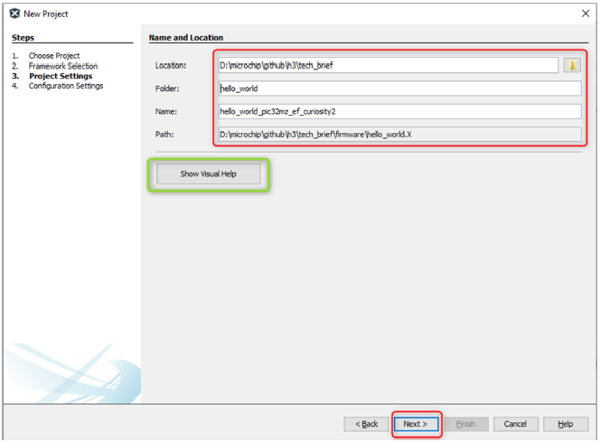
Note: Click the Show Visual Help button to open a contextual help window for a detailed description of various fields in the Project Settings.
- Click Next.
- Under the Configuration Settings section, enter the details as given below:
- Name: Enter the configuration name as pic32mz_ef_curiosity2.
- Target Device: Choose PIC32MZ2048EFM144. 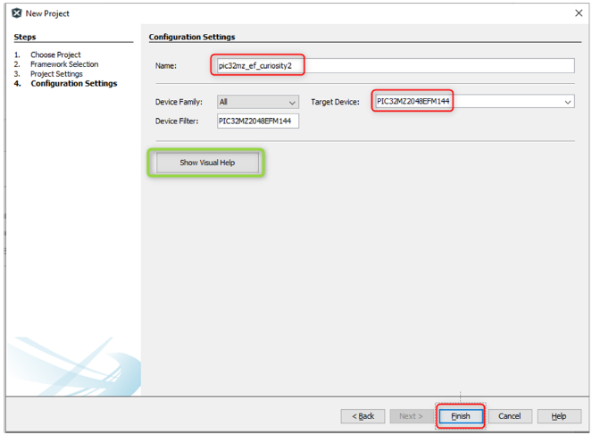
Note: Click the Show Visual Help button to open a contextual help window for a detailed description of various fields in the Project Settings.
- Click Finish to launch the MHC.
Note: After clicking the Finish button, if MHC does not launch, users can launch it by selecting Tools > Embedded > MPLAB® Harmony 3 Configurator from the MPLAB X IDE. - Before launching the MHC, the Configuration Database Setup window will be displayed, where the Device Family Pack (DFP) and Cortex Microcontroller Software Interface Standard (CMSIS) path can be changed, if required. For this demonstration, the default settings are used. 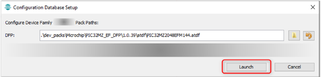
- Click Launch.
- The MHC plug-in will open in a new window. The image below highlights different section available in the MHC. 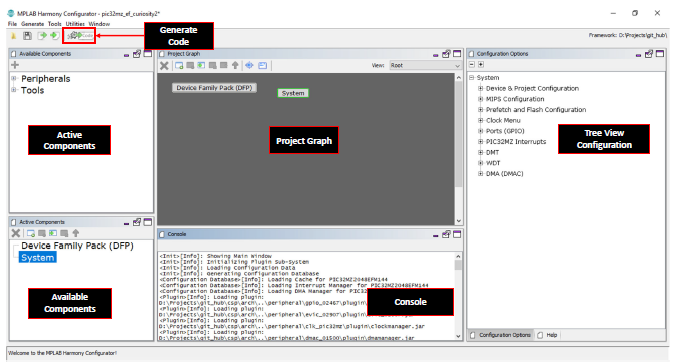 Note: For this demonstration, Stand-alone mode is used for the MHC Window Manager by changing the settings in the MPLAB X IDE, by selecting > Tools > Options > Plugins > MPLAB Harmony Configurator 3 > Window Manager. If the Native Netbeans mode of the MHC is required, users can set it as default mode by configuring it.
Step 2: Adding and configuring the MPLAB Harmony components:
- From Tools, select Clock Configuration to launch the Clock Easy View. 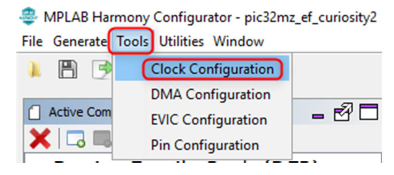
The Clock Easy View window will be displayed inside the MHC Window. -
In the Clock Easy View window, scroll to the right and verify that the SYSCLK is set to 200 MHz. 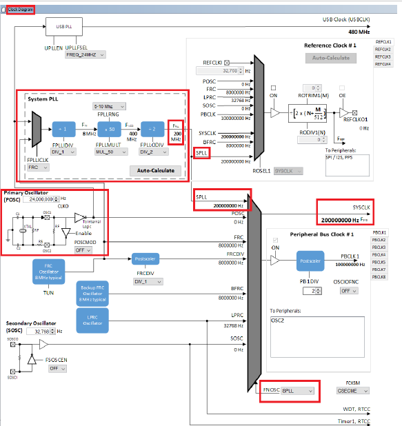
- To add and configure the UART Peripheral Library follow these steps:
- Under Available Components, expand Peripherals and then expand the options available for UART.
- Double-click on UART6 to add it to the project graph
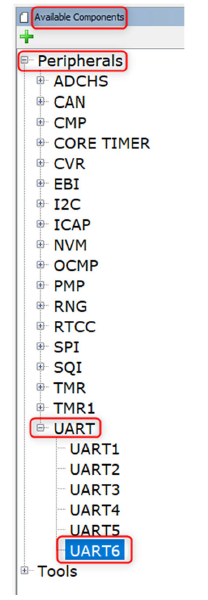
4.Select the UART6 Peripheral Library in the Project Graph, and in the Configuration Options window. Configure it as follows:
- Verify that the default baud rate is set to 115,200 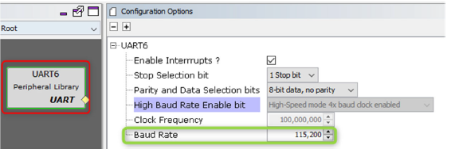
- Configure the UART pins in the Pin Settings window. In the MHC, select Tools > Pin Configuration to open the Pin Settings window.
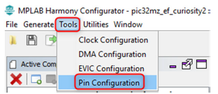 - The MHC Pin Settings window will open and display these options: Pin Diagram, Pin Table, and Pin Settings.
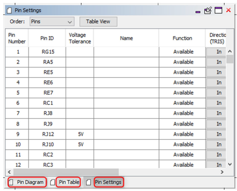
Note: According to schematic of the Curiosity PIC32MZ EF 2.0 Development Board, the PICkit™ On Board 4 (PKOB4) can be used as Virtual Com Port to have serial communication between PIC32MZ EF device and connected computer console. For that, RF2 (Pin #79) of the PIC32MZ EF must be configured as U6TX. - Click the Pin Settings tab and configure the RF2 pin as U6TX. 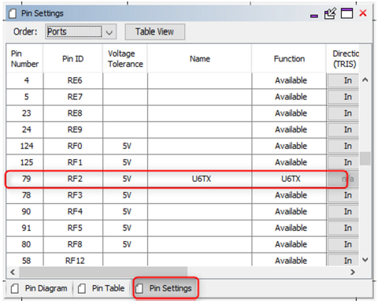
- The same pin (RF2) can be configured by clicking the Pin Table tab. 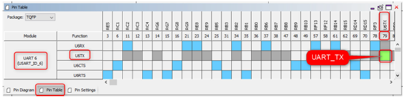
Note: The demonstration will use the UART PLIB for printing messages on the serial terminal. Therefore, in the UART6 configuration, only the transmit pin is configured and the receive pin is not configured.
- Configure the UART pins in the Pin Settings window. In the MHC, select Tools > Pin Configuration to open the Pin Settings window.
Step 3: Generating the Code
-
In MHC click on the Save MHC State icon to save the MHC state before generating the code.

-
Save the configuration in its default location, when prompted. 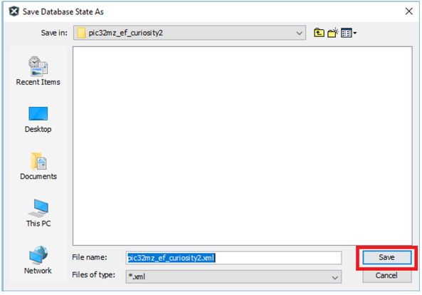
-
Click on the generate code icon to generate the code.
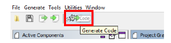 -
The Modified Configuration window is prompted, click Save to save the configuration.

- In the Generate Project window, click Generate to generate the code. 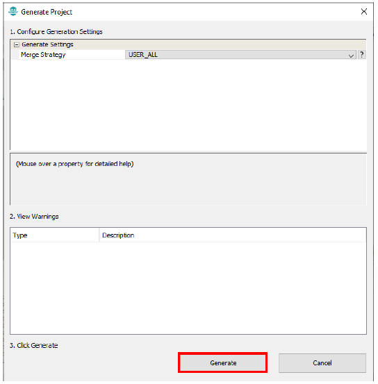
- The above step triggers these actions in MHC:
- Generate the code as per the configurations done.
- Place the generated code and required MPLAB Harmony framework files in the MPLAB Harmony project directory, in this case: D:\microchip\github\h3\tech_brief\firmware\src.
- Add all generated codes and MPLAB Harmony framework files into the MPLAB Harmony project, as shown in the following figure.
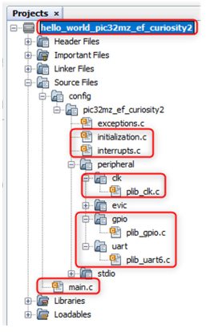
Note: The MPLAB Harmony project will be shown in another window as this project is in Standalone mode.
-
The generated code descriptions are as follows:
- definitions.h: Includes all the header files required for the project.
- initialization.c: Initializes all the MPLAB Harmony modules used in the application.
- interrupts.c: Contains the mapping of all the interrupt vectors on the selected device.
- main.c: A function call to initialize the system present in this file. The user needs to develop their application in this file.
- peripheral: All peripheral source codes are added in this folder.
Note: The MHC provides an option to change the generated file name, and if this option is not used, by default, the file name main.c is generated.
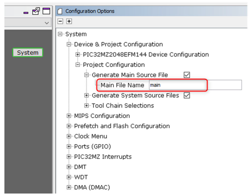
Step 4: Developing and Running an Application
To develop and run an application, follow these steps:
-
Developing an application: For this demo application, add the highlighted codes (as shown in image below) in the main.c file. This will send the “Hello World!” string to the console running on the PC. The following code is provided for convenience:
uint8_t buffer[]= "Hello World!\r\n"; UART6_Write(&buffer[0], sizeof(buffer));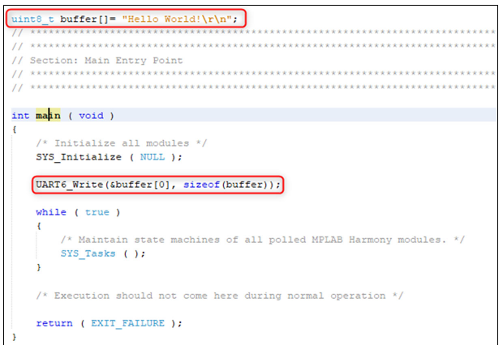
- Selecting Hardware Tool and Compiler: In the MPLAB X IDE Project Properties window perform these actions:
- Under Categories section, select Conf: (pic32mz_ef_curiosity2), and in the Configuration section, select the hardware tool and compiler toolchain. 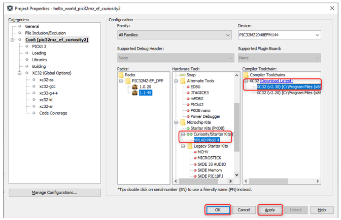
- Click Apply, and then click OK.
- Connecting Hardware: Connect a micro-USB cable between the DEBUG USB on the board and the PC. This enables the programming of the microcontroller and provide a serial connection with the console device (computer).
- Setting up the Serial Console: Open a terminal application, such as Tera Term on the PC and perform the serial port setup. Below is the default setup details for Tera Term.
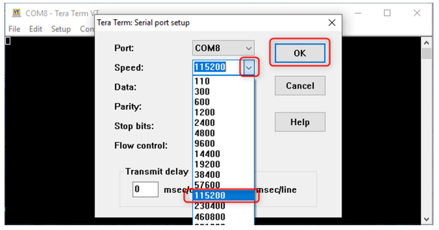 - Programing and Running the Application: Build and program the Curiosity PIC32MZ EF 2.0 Development Board by using the MPLAB X IDE.
- Observing the Output: Observe the “Hello World!” string on the console. If the desired output is not found on the console, press the Reset button on the Curiosity Development board to reset the device, and ensure that the UART message is communicated.